A quiet garden of the Dharma, in the middle of Medford
Teachings, practice and community in the tradition of Lama Tsongkhapa, since 1989.
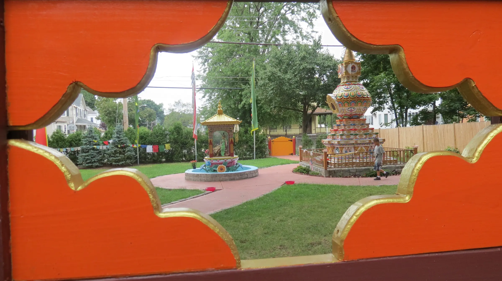
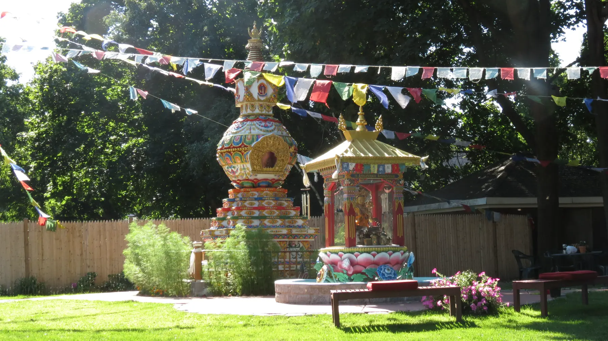
The Kalachakra Stupa for World PeaceIn our garden since 2010
Since 1989, people have come to Kurukulla to study the Buddha's teachings, to practise together and to learn to be of benefit to others. The center is run by volunteers, guided by our resident teacher Geshe Tenley, under the spiritual direction of Lama Zopa Rinpoche. Everyone is welcome.
Ways to practise
From a first class to a lifetime of study.
-
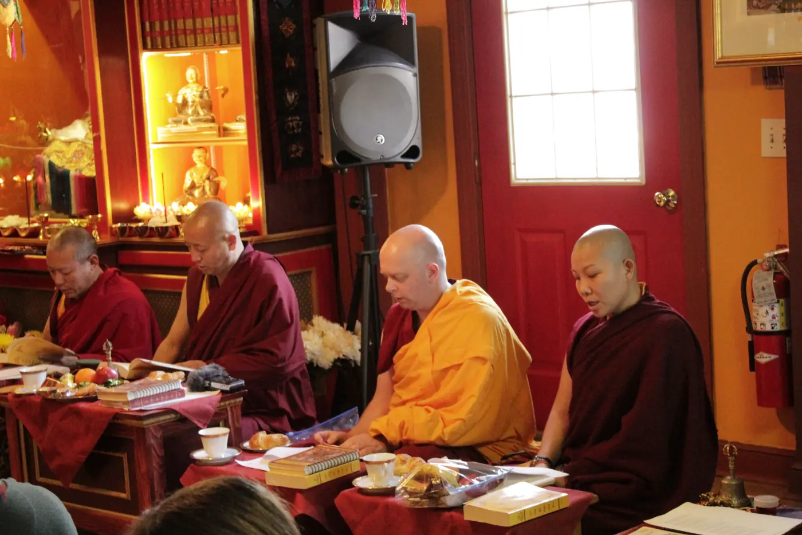
Teachings with Geshe Tenley
Shantideva on Sunday mornings, The Wheel of Sharp Weapons on Wednesday evenings.
-
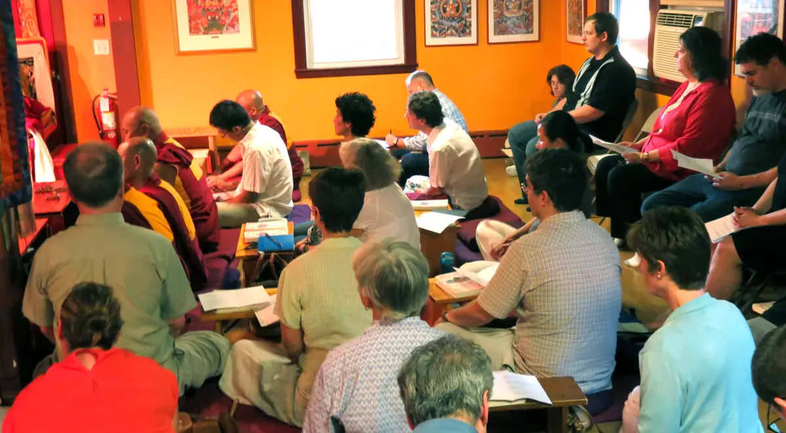
Introduction to Buddhism
Saturday afternoons with Seán González. Drop in for one module or all five.
-
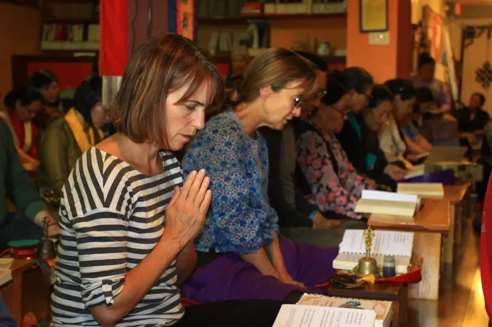
Pujas and holy days
Tara, Guru Puja and Medicine Buddha through the lunar month, and the great Buddha days.
-
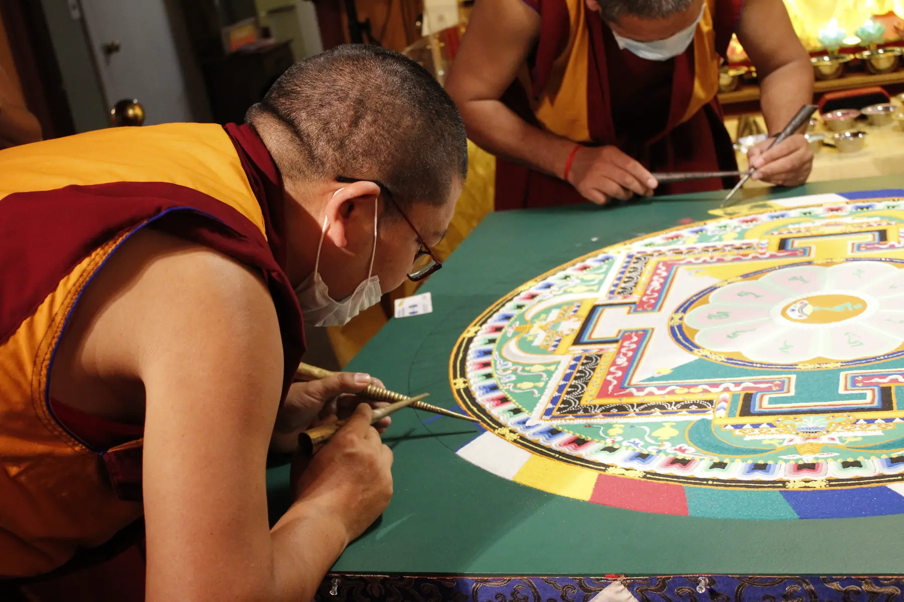
Special events
Visiting lamas, initiations, sand mandalas, weekend retreats and community gatherings.
-
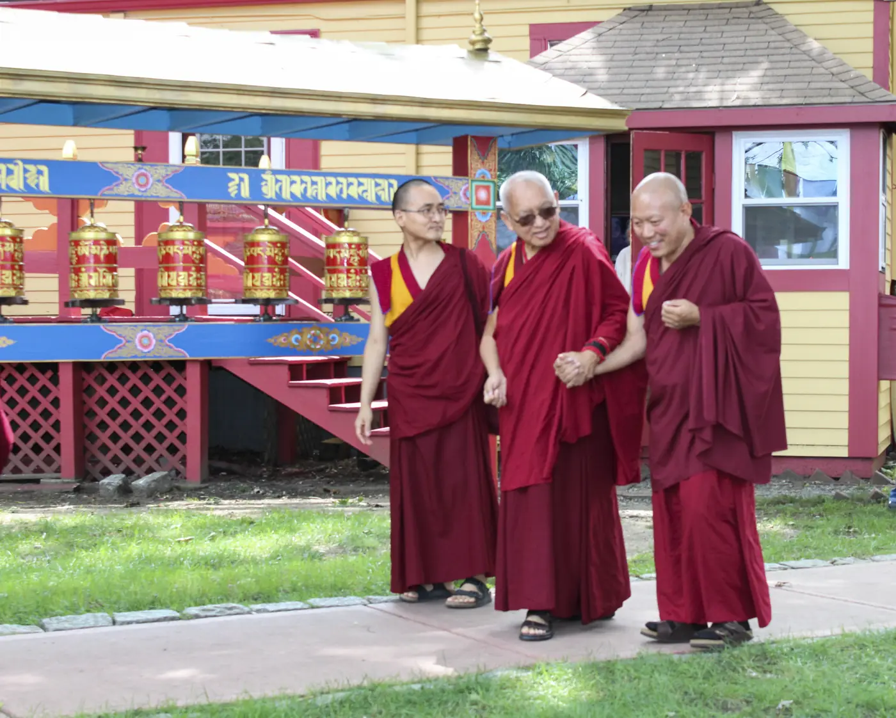
Discovering Buddhism
The FPMT's fourteen mini-courses, for anyone who wants to bring study and practice together.
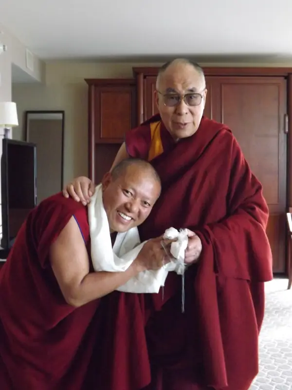

Our resident teacher
Venerable Geshe Ngawang Tenley
Known to everyone at Kurukulla for his approachability and kindheartedness. His activities in the US and around the world bring joy and benefit to everyone he meets.
1990 to 2008
Sera Jey Monastic University
Ordained in 1990 by Gyume Khensur Geshe Urgyen Tseten Rinpoche, he studied for the geshe degree at Sera Jey, received many teachings from His Holiness the Dalai Lama, took full ordination from His Holiness in 1998 and completed the geshe degree in 2008.
2009 to today
Resident teacher at Kurukulla
Geshe-la began teaching here in 2009. On the advice of Lama Zopa Rinpoche he was appointed resident teacher in 2010, following his uncle, the late Geshe Tsulga. Today he teaches on Sunday mornings and Wednesday evenings.
Join a teachingThe Kalachakra Stupa for World Peace
A stupa is a physical embodiment of the Buddha's enlightened mind. Ours was built on the advice of Lama Zopa Rinpoche and completed in the summer of 2010, after many years in the making.

Walking around a stupa clockwise, with a prayer or a mantra, is one of the oldest Buddhist practices, and a simple way to begin.
The story of the stupa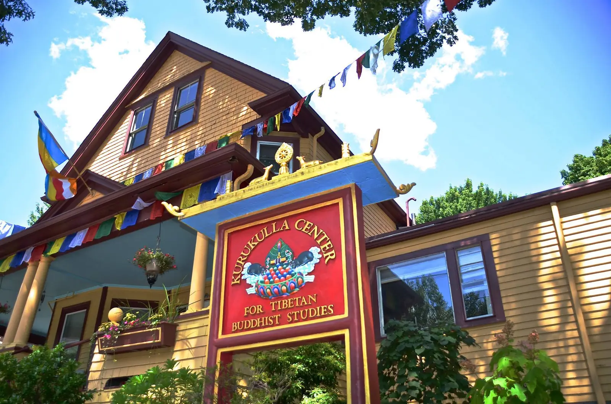
Find us
68 Magoun AvenueMedford, MA 02155
- TOrange Line to Wellington, then the 134 bus, or a 15 minute walk from Medford Square.
- CarI-93 exit 32, Route 60 east, Park Street, then Magoun Avenue. The big yellow house on the left.
(617) 624-0177 · info@kurukulla.org
Directions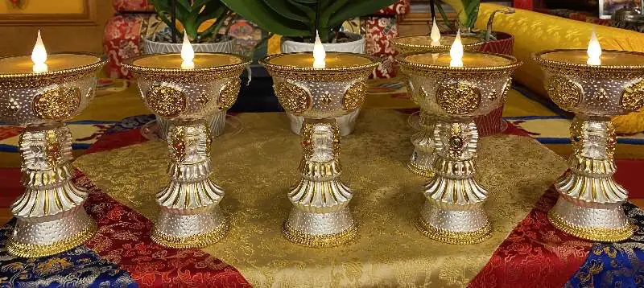
Dana: the practice of giving
The center is entirely volunteer-run and lives on generosity. Each month it costs between $8,000 and $9,000 to support Geshe Tenley and our translator Damchoe, and to keep the house and garden open to all.
Kurukulla Center is a 501(c)(3) nonprofit. Gifts are tax-deductible to the extent allowed by law.
Membership
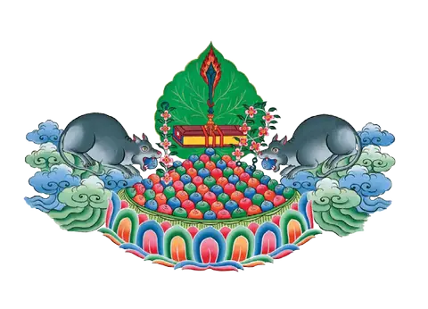